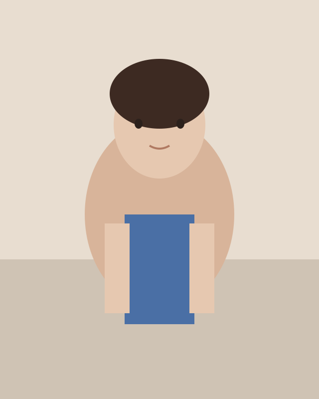

Product Designer

I'm a product designer focused on creating user-centric experiences that are seamless and intuitive.
I work with cross-functional teams to solve real problems and bridge the gap between users and business needs.
My process includes research, ideation, wireframing, prototyping, and testing. I believe great design is about delivering delightful products that make a meaningful impact.
I love coffee and problem-solving.
Figma, FigJam, Miro, Photoshop, Illustrator, Principle, Maze, Google Analytics, Jira, Notion, and Slack.
Open to new opportunities where I can contribute to thoughtful, user-centered work.